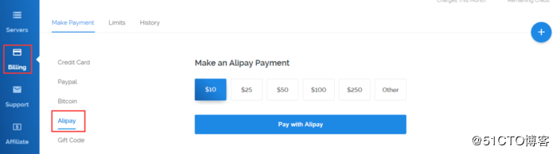
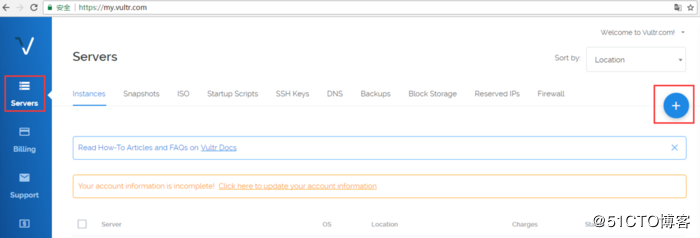
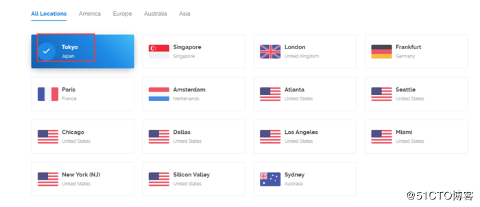
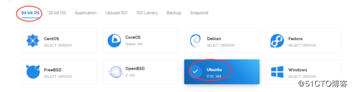
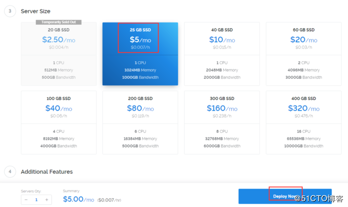
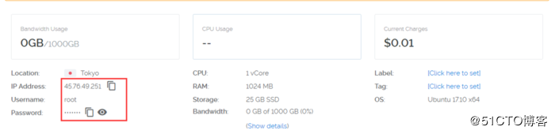
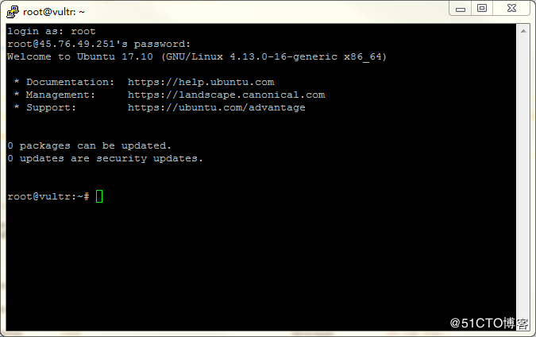
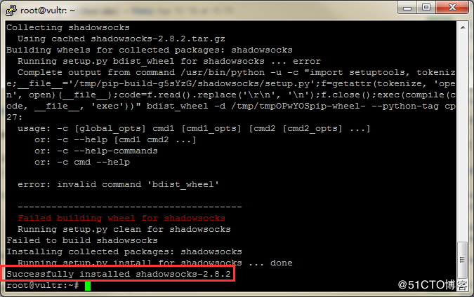
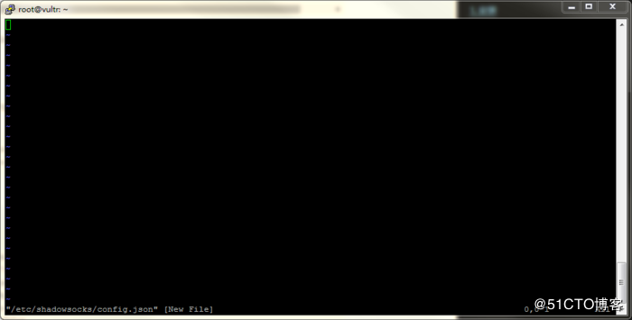

我这边是用ubuntu在海外服务器上（Vultr）部署的SS，下面来教大家怎么搭（文末附带工具下载地址）：
一、购买服务器
要搭***，首先得有一个香港或者海外的服务器，这里我用的是Vultr，经过对比Vultr的性价比很高：速度、价格（最便宜的2.5美元）、流量都很不错，如果只用来搭***搓搓有余，还能额外建个小网站。而且可以用支付宝来支付。
1、注册：
Vultr注册网址：点击进入
2、充值：Vultr可以选支付宝来充值，支付宝最低充值10美元（少吃几块肉...）

3、充值完成后，点Servers，点右上角的加号来添加服务器

然后选择服务器位置、配置以及系统版本，亚洲推荐东京，美国推荐洛杉矶，其他地方不建议选。当然东京和洛杉矶2.5美元的都是缺货状态，你可以选5美元、10美元的，或者选美国的其他地方，我这边选了纽约，推荐洛杉矶，日本用的人多，晚上会抽风。

4、系统选择：系统的话，我选择64位的Ubuntu17.10

5、选择配置：内存+硬盘+流量=价格

6、以下的选项不用选择，直接创建。
服务器购买完成后，等几分钟，等创建好之后点进去看详情，记住IP地址、用户名和密码。

二、配置服务器
1、首先我们要做的是连接服务器，我们需要一个ssh客户端来连接，我这边用的是putty（文末附工具下载地址），打开putty后输入服务器的ip地址点open就可以了，然后输入用户名和密码（鼠标右键是粘贴）就进去到你的远程服务器了。

2、安装pip和几个依赖包，安装过程遇到Y/n的一律输入Y（按顺序执行下面命令）：
apt-get install python-pip python-gevent python-m2crypto
pip install --upgrade setuptools
3、安装SS：
pip install shadowsocks
出现Successfully installed shadowsocks-XXX说明安装成功了

4、按顺序执行下面命令，在/etc目录下新建文件夹“shadowsocks”,然后在shadowsocks文件夹下新建文件“config.json”：
mkdir /etc/shadowsocks
vim /etc/shadowsocks/config.json
输入完上面命令之后出现的页面，就相当于Windows中的记事本。最下一行提示我们当前这个文件是新建的。

在这个视图中有如下几个按键需要记住“i”：按键盘上的i键，窗口最底下显示“insert”，表示当前文件可编辑。“Esc”：编辑完之后按Esc退出编辑模式。“:”：半角的冒号，在非编辑模式下按键盘上的冒号（半角），可以进入输入命令的模式。“w”：在命令模式中输入w并回车，窗口最下显示“written”，表示所做的更改已保存。“q”：在命令模式中输入q并回车，可以退出当前的编辑器。
config.json的内容如下：
{
"server":"0.0.0.0",
"server_port":8388,
"password":"your_password",
"timeout":600,
"method":"aes-256-cfb",
"fast_open": false
}
"server"：是你Vultr服务器的ip地址
"server_port"和"password"可以根据自己的要求设定
如果需要同时开多个端口，config.json的内容可以设置如下：
{
"server":"0.0.0.0",
"port_password": {
"8388": "your_password1",
"8389": "your_password2"
},
"timeout":600,
"method":"aes-256-cfb",
"fast_open": false
}
5、执行以下命令启动Shadowsocks：
ssserver -c /etc/shadowsocks/config.json -d start
停止Shadowsocks执行如下命令：
ssserver -c /etc/shadowsocks/config.json -d stop
6、设置Shadowsocks开机自启动
执行下面的命令，创建shadowsocks.servic文件：
vim /etc/systemd/system/shadowsocks.service
shadowsocks.service的内容如下：
[Unit]
Description=Shadowsocks
After=network.target[Service]
Type=forking
PIDFile=/run/shadowsocks/server.pid
PermissionsStartOnly=true
ExecStartPre=/bin/mkdir -p /run/shadowsocks
ExecStartPre=/bin/chown root:root /run/shadowsocks
ExecStart=/usr/local/bin/ssserver --pid-file /var/run/shadowsocks/server.pid -c /etc/shadowsocks/config.json -d start
Restart=on-abort
User=root
Group=root
UMask=0027[Install]
WantedBy=multi-user.target
设置文件权限：
chmod 755 /etc/systemd/system/shadowsocks.service
启动服务：
systemctl start shadowsocks
systemctl enable shadowsocks
三、Final
好了，到此，你的***已经搭好了，你现在只要去下载shadowsocks的客户端填上Config.json中的ip地址、端口号、以及密码就可以上你想上的网站了。
云盘（密码：9x4g）暂停客户端下载

Ctrl+Enter 发布
发布
取消